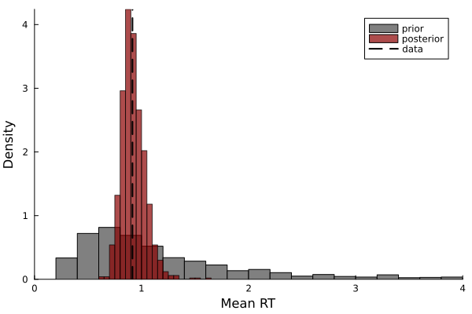

Prior and Posterior Predictive Distributions
This tutorial explains the steps required for constructing and plotting prior and posterior predictive distributions of a sequential sampling models (SSMs). The primary function we will be using is predict_distribution, which allows you to generate prior or posterior predictive distributions from a given model.
Example
The first step is to load the required packages and set the seed for the random number generator.
using Distributions
using Plots
using Random
using SequentialSamplingModels
using Turing
Random.seed!(1124)Generate Simulated Data
We will use the Wald model as a simple example to illustrate how to create predictive distributions. The Wald model describes the evidence accumulation process underlying single detection decisions, such as respending when a stimulus appears. In the code block below, we will generate 50 data points.
n_samples = 50
rts = rand(Wald(ν=1.5, α=.8, τ=.3), n_samples)Define Turing Model
Next, we will develop a Turing model for generating prior and posterior predictive distributions. You may develop the Turing model as usual, with one minor exception: you must return a NamedTuple of parameters. In the example below, $\nu$ and $\alpha$ are estimated, but $\tau$ is fixed. You may use any combination of estimated and fixed parameters.
@model function wald_model(rts)
ν ~ truncated(Normal(1.5, 1), 0, Inf)
α ~ truncated(Normal(.8, 1), 0, Inf)
τ = 0.3
rts ~ Wald(ν, α, τ)
return (;ν, α, τ)
endIn the next code block, we will pass the data and create a model object.
model = wald_model(rts)Generate Prior Predictive Distribution
Generating a prior predictive distribution involves two steps: (1) sample from the prior, and (2) predict data or a statistic with the model evaluated at the prior samples. Below, we will sample 1,000 parameter vectors from the model.
prior_chain = sample(model, Prior(), 1000)For the next step, we will generate predictions from the model using the parameters sampled from the prior distribution. When Turing is loaded, SequentialSamplingModels automatically loads predict_distribution into your session. The signature for predict_distribution is as follows:
predict_distribution(dist, args...; model, func, n_samples, kwargs...)func computes a statistic from simulated data of the model and has the general form func(sim_data, args...; kwargs...). Thus, the only constraint is that func must recieve the simulated data as its first argument. args... and kwargs... are optionally pased to func. The remaining inputs are the model type dist, the Turing model object model, and the number of simulated observations n_samples.
As a simple illustration, we will compute the prior predictive mean by calling the following two functions. The first function creates a new function to sample from the predictive distribution and the second function generated_quantities performs the sampling.
pred_model = predict_distribution(Wald; model, func=mean, n_samples)
prior_preds = generated_quantities(pred_model, prior_chain)Generate Posterior Predictive Distribution
Generating a posterior predictive distribution involves a similar process. First, we will estimate the parameters from the data to obtain a chain of posterior samples. Next, we will generate the posterior predictive distribution using generated_quantities:
post_chain = sample(model, NUTS(1000, .85), 1000)
post_preds = generated_quantities(pred_model, post_chain)Plot the Distributions
Now that we have generated the predictive distributions, we can compare them to the data by plotting them as a histogram. The histogram below reveals two insights: first, the data are centered near the prior and posterior predictive distributions, indicating they predict the data accurately; second, the posterior distribution is concentrated more closely around the data, indicating the information gain acquired during parameter estimation.
histogram(prior_preds[:], xlims=(0,4), xlabel="Mean RT", ylabel="Density", norm=true,
color=:grey, label="prior", grid=false)
histogram!(post_preds[:], alpha=.7, color=:darkred, norm=true, label="posterior", grid=false)
vline!([mean(rts)], linestyle=:dash, color=:black, linewidth=2, label="data")
Posterior Predictive Distribution of Quantiles
One goal of SSMs is to accurately characterize the distribution of reaction times. The previous example only evaluated one aspective of the model–-namely, the predicted mean. Given the interest in characterizing the shape of the RT distribution, we need a different method. One method for evaluating the model's ability to capture the shape of the distribution is to compare the quantiles. In the example below, the quantiles of the data and model are evaluated at the deciles: $[.1,.2,\dots, .9]$. If the model matches the data accurately, the quantiles will fall along the identity line.
pred_quantiles = predict_distribution(Wald; model, func=compute_quantiles, n_samples=20)
post_quantile_preds = generated_quantities(pred_quantiles, post_chain)
q_data = compute_quantiles(rts)
plot_quantiles(q_data, post_quantile_preds)
The posterior predictive quantile-quantile plot above shows that the model fits the reaction time distribution well. This close match is to be expected, as we generated the data from the same model.